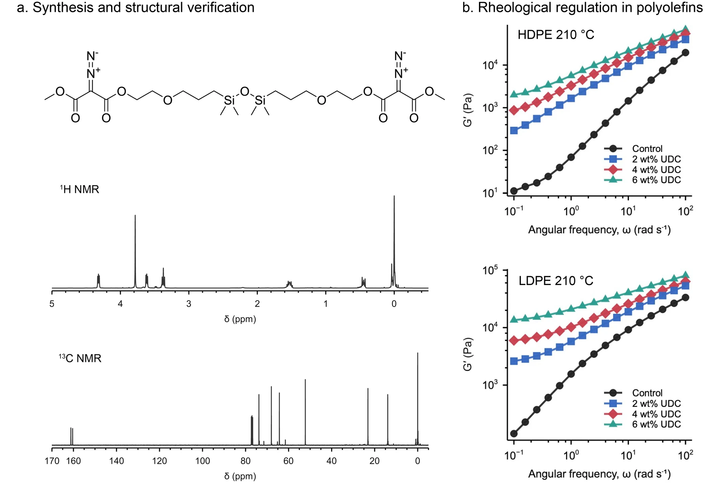
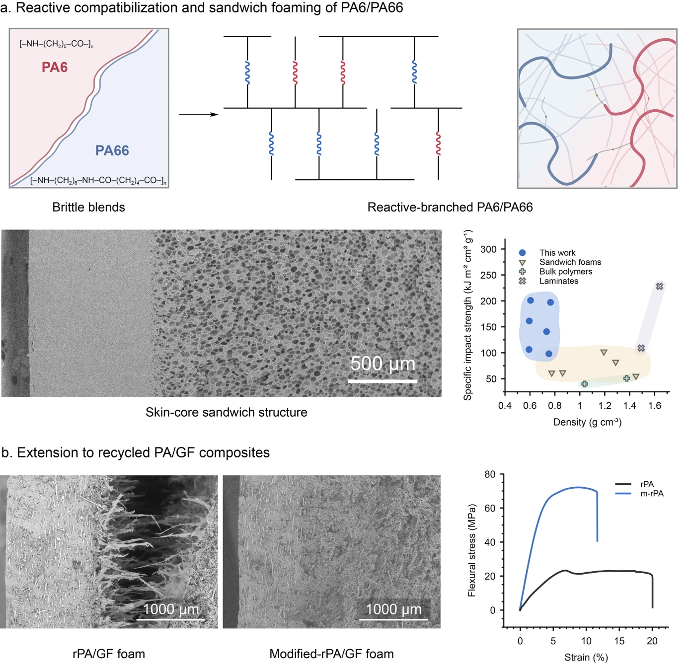
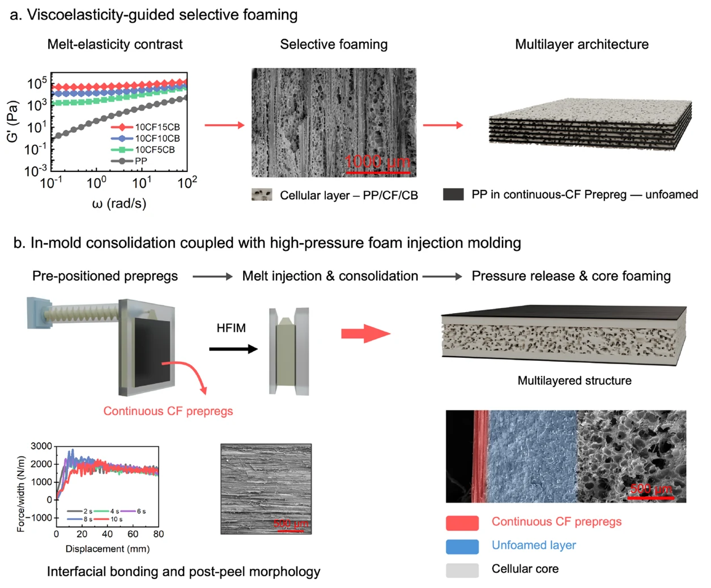
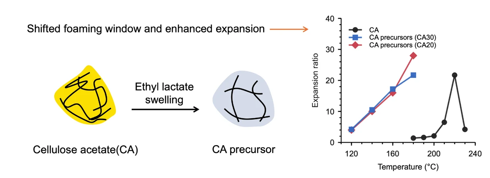

Recycling and upcycling incompatible plastics
I synthesized and characterized a crosslinker and tuned polyolefin melt response to explore processing routes for incompatible plastic mixtures.

I synthesized and characterized a crosslinker and tuned polyolefin melt response to explore processing routes for incompatible plastic mixtures.

I used a commercial crosslinker to improve the toughness of recycled polyamides, informing the design of tougher recycled engineering plastics.

I developed alternating multilayer structures through selective foaming, then advanced integrated injection molding for efficient fabrication of multilayer polymer structures.
Paper
I developed solvent-assisted processing to lower cellulose acetate foaming temperatures, demonstrating a wider processing window for a bio-based polymer.
Paper
5 papers
The Journal of Supercritical Fluids · 227, 106734First author
Composites Part B: Engineering · 291, 112006First author
European Polymer Journal · 255, 114918
Composites Communications · 53, 102217
ACS Sustainable Chemistry & Engineering · 12(29), 10947–10957
PhD student in Advanced Materials at HKUST (Guangzhou), August 2025–present.
My research focuses on the connections between molecular design, interfaces, processing and polymer performance. I am interested in how these relationships can guide the development of reliable materials for use and reuse, including dynamic networks, multiphase polymers and bio-based systems.
The Hong Kong University of Science and Technology (Guangzhou)
Zhengzhou University
Zhengzhou University